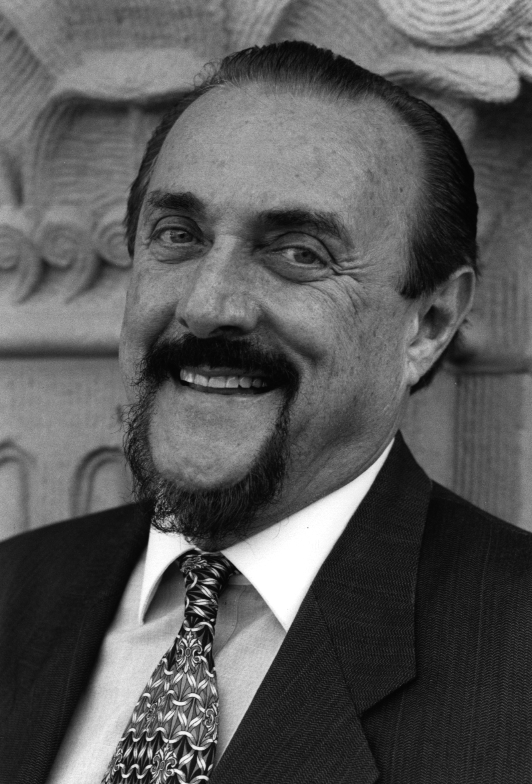

Heroism is not the same as altruism. Whereas altruism emphasises selfless acts that benefit others, heroism implies the possibility of greater personal sacrifice. The individual's commitment to a noble purpose and willingness to accept the consequences of fighting for that purpose are at the heart of heroism.
Philip Zimbardo
Zeno Franco